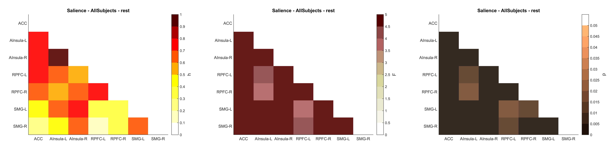
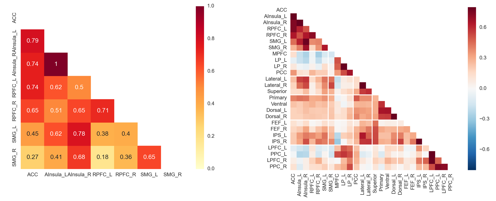

CONN Toolbox
Extract and plot ROI-to-ROI connectivity matrix
February 2017
The CONN toolbox is a very efficient MATLAB-based tool to perform functional connectivity analysis and I've been an enthusiastic user ever since I discovered it. It provides a robust analysis pipeline from raw files to second-level adavanced statistical results as well as a very nice and intuitive GUI - making it one of the best fcMRI toolbox for both beginner and expert. I worked a great deal with it for ROI-to-ROI analysis of within and between network connectivity. One feature that is not (yet) implemented in CONN is the possibility to plot a graphical representation of network connectivity matrix. The purpose of this tutorial is therefore to show how to extract (and export to CSV) connectivity matrix from CONN results folder and then plot them, using either Matlab or Python.
ROI.mat structure
CONN ROI.mat file is created when clicking "Results Explorer" in the bottom left of the CONN 2nd-level interface. This MAT structure can be found in the folder /results/secondlevel/FIRSTLEVEL_NAME/GROUP/SESSION/ and contains the following fields (see this post)
1) Using MATLAB
Extract connectivity matrix
The following code extract all the pairwise correlations in the ROI.mat file
% Define analysis path
wdir = 'C:/Users/Raphael/Desktop/These/conn_example/results/secondlevel';
corr_net = 'Salience';
corr_group = 'AllSubjects';
corr_run = 'rest';
corr_folder = [ wdir '/' corr_net '/' corr_group '/' corr_run '/' ];
load([corr_folder 'ROI.mat']);
numROI = size(ROI, 2);
corr_name = ROI(1).names(1:numROI);
corr_h = []; % Beta value
corr_F = []; % Statistic value
corr_p = []; % One-tailed p value
for i = 1:numROI
corr_h = [ corr_h ; ROI(i).h(1:numROI) ];
corr_F = [ corr_F ; ROI(i).F(1:numROI) ];
corr_p = [ corr_p ; ROI(i).p(1:numROI) ];
end
Export to CSV
Now we can export it to CSV file (by default in the same folder as ROI.mat file
% array2table does not work with '-' in var names
corr_name2 = strrep(corr_name, '-', '_');
T_h = array2table(corr_h, 'RowNames', corr_name2, 'VariableNames', corr_name2);
T_F = array2table(corr_F, 'RowNames', corr_name2, 'VariableNames', corr_name2);
T_p = array2table(corr_p, 'RowNames', corr_name2, 'VariableNames', corr_name2);
writetable( T_h, [corr_folder 'beta_' corr_net '_' corr_group '_' corr_run '.csv'], 'WriteVariableNames', true, 'WriteRowNames', true, 'delimiter', 'semi' );
writetable( T_F, [corr_folder 'F_' corr_net '_' corr_group '_' corr_run '.csv'], 'WriteVariableNames', true, 'WriteRowNames', true, 'delimiter', 'semi');
writetable( T_p, [corr_folder 'p_' corr_net '_' corr_group '_' corr_run '.csv'], 'WriteVariableNames', true, 'WriteRowNames', true, 'delimiter', 'semi');
Statistics
The following lines compute uncorrected, bonferroni and FDR-corrected p-values
anti_corr_net = False;
% Case two or several anti-correlated networks (ex: Default and Dorsal Attention)
if anti_corr_net
tail = 'two-sided';
corr_p = 2*min(corr_p, 1-corr_p);
% Case single network
else
tail = 'one-sided';
end
% Compute Bonferroni and FDR correction
% conn_fdr function is in conn main folder
alpha_bonf = 0.05 / ((numROI)*(numROI-1)/2);
vector_fdr = nonzeros(triu(corr_p)');
vector_fdr(isnan(vector_fdr)) = [];
corr_p_fdr = conn_fdr(vector_fdr);
% WRITE OUTPUT
fprintf('\nANALYSIS INFO');
fprintf('\n--------------------------------------');
fprintf(['\nNetwork:\t ' corr_net]);
fprintf(['\nGroup:\t\t ' corr_group]);
fprintf(['\nRun:\t\t ' corr_run]);
fprintf('\nSTATISTICS');
fprintf('\n--------------------------------------');
fprintf([ '\n' num2str(numROI) ' x ' num2str(numROI-1) ' ROIs matrix ; ' tail]);
fprintf([ '\np-uncorrected:\t\t\t\t\t ' num2str(numel(corr_p(corr_p <= 0.05))/2) ]);
fprintf([ '\np-bonferroni (alpha = ' num2str(round(alpha_bonf, 5)) '):\t ' num2str(numel(corr_p(corr_p <= alpha_bonf))/2) ]);
fprintf([ '\np-FDR corrected:\t\t\t\t ' num2str(numel(corr_p_fdr(corr_p_fdr <= 0.05))) ]);
fprintf('\n--------------------------------------\n');
MATLAB Output:
ANALYSIS INFO -------------------------------------- Network: DMN Group: Controls(1).Patients(-1) Run: rest STATISTICS -------------------------------------- 5 x 4 ROIs matrix ; one-sided p-uncorrected: 4 p-bonferroni (alpha = 0.005): 1 p-FDR corrected: 1 --------------------------------------
Plotting brain connectivity matrix
Once we extracted and exported the connectivity matrix in text format, we can plot it using Matlab imagesc command. I will detail here for beta values (corr_h matrix) but if you want to plot F or p values you can check the full script on my GitHub repository
% Remove upper triangle + diagonal
corr = tril(corr, -1)
% Start plotting
fig = figure;
set(gcf,'Units','inches', 'Position',[0 0 6 4])
im = imagesc(corr, clim );
clim = [ 0 1 ];
colormap(flipud(hot(10)));
h = colorbar('eastoutside');
xlabel(h, 'h', 'FontSize', 14);
% Title, axis
title('Salience Network', 'FontSize', 14);
set(gca, 'XTick', (1:numROI));
set(gca, 'YTick', (1:numROI));
set(gca, 'Ticklength', [0 0])
grid off
box off
% Labels
set(gca, 'XTickLabel', corr_name, 'XTickLabelRotation', 0);
set(gca, 'YTickLabel', corr_name);
With some adaptation, the previous code also works for between-network connectivity matrix (blue denotes negative correlations)

2) Using Python
The previous connectivity matrices can also be extracted and plot using Python (requires numpy, scipy, pandas and seaborn packages). Apart form being free, Python has several advantages compared to Matlab, with notably the possibility to emphasize networks separation (see example below), and to annotate values in each cell of the heatmap plot. The only trick is in the importation and conversion of the original MAT file to a Pandas dataframe.
Code:
import numpy as np
import pandas as pd
import seaborn as sns
import matplotlib.pyplot as plt
import os
import scipy.io
sns.set(style="white", context='paper', font_scale=1, font='monospace')
def extract_conn_correl_mat():
# Analysis Information
wdir = 'C:/Users/Raphael/Desktop/These/CONN_Club_Neuro/Conn_ClubNeuro_Example/results/secondlevel'
correl_net = 'Salience'
correl_group = 'AllSubjects'
correl_run = 'rest'
correl_type = 'p'
correl_folder = os.path.join(wdir, correl_net, correl_group, correl_run )
# Load .mat file
mdata = scipy.io.loadmat(os.path.join(correl_folder, 'ROI.mat'))
mdata = mdata['ROI']
mdtype = mdata.dtype
ndata = {n: mdata[n] for n in mdtype.names}
mcol = ['names', 'h', 'F', 'p']
mcorr = pd.DataFrame(np.concatenate([ndata[c] for c in mcol], axis=0)).transpose()
mcorr.columns = mcol
mcorr.names = np.concatenate(mcorr.names[0][0])
mcorr.names = mcorr.names.str.split('.').str.get(0)
# Extract selected values
if correl_type == 'beta':
corr = pd.DataFrame(np.concatenate([mcorr.h[c] for c in mcorr.h.keys()], axis=0 ), index=mcorr.names)
elif correl_type == 'F':
corr = pd.DataFrame(np.concatenate([mcorr.F[c] for c in mcorr.F.keys()], axis=0 ), index=mcorr.names)
elif correl_type == 'p':
corr = pd.DataFrame(np.concatenate([mcorr.p[c] for c in mcorr.p.keys()], axis=0 ), index=mcorr.names)
corr = corr.iloc[:, 0:corr.shape[0]]
corr.columns = mcorr.names
# Export to csv
corr.to_csv(os.path.join(correl_folder, correl_type + '_' + correl_net + '_' + correl_group + '_' + correl_run + '_corr_mat.csv'), sep=';', decimal='.')
# Plot
plot_correl_matrix(corr, correl_type, correl_net, correl_group, correl_run, correl_folder )
def plot_correl_matrix(corr, correl_type, correl_net, correl_group, correl_run, correl_folder ):
# Mask diagonal
mask = np.zeros_like(corr, dtype=np.bool)
mask[np.triu_indices_from(mask, k=1)] = True
# Define plot properties
if correl_type == 'F':
vmin = 0
vmax = 10
annot = False
cmap = "YlOrRd"
elif correl_type == 'beta' :
vmin = 0
vmax = 1
annot = True
cmap = "YlOrRd"
elif correl_type == 'p' :
vmin = 0
vmax = 0.1
annot = False
cmap = "YlOrRd_r"
f, ax = plt.subplots()
sns.heatmap(corr, mask=mask, vmin=vmin, vmax=vmax, square=True, cmap=cmap, annot=annot, cbar=True, xticklabels=False, yticklabels=True, linewidths=.0 )
plt.xticks(rotation=0)
plt.ylabel('')
plt.xlabel('')
plt.title(correl_type + '_' + correl_net + '_' + correl_group + '_' + correl_run)
# Emphasize networks separation
# networks = np.array(pd.read_csv(os.path.join(correl_folder, 'networks_level_values.csv')))
# for i, network in enumerate(networks):
# if i and network != networks[i - 1 ]:
# ax.axhline(len(networks) - i, c="w")
# ax.axvline(i, c="w")
# f.tight_layout()
plt.savefig(os.path.join(correl_folder, correl_type + '_' + correl_net + '_' + correl_group + '_' + correl_run + '.png'), dpi=300)
if __name__ =='__main__':
extract_conn_correl_mat()